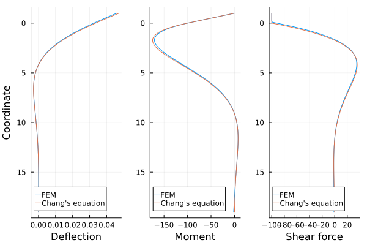

Finite Element Analysis
Simulate lateral behavior of pile based on FEM using beam elements.
Overview of finite element formulation
The differential equation for the deflection curve of a beam on an elastic foundation is
\[EIv''''(x) + p(x,v) = 0\]
where $E$ is the Young's modulus, $I$ is the second moment of area, $v$ is the deflection, $p$ is the pressure from the foundation. Multiplying the test function $w$ and integral the equation over the domain reduces the form
\[\int w \left[ EIv''''(x) + p(x,v) \right] \mathrm{d}x = 0.\]
Applying the divergence theorem two times leads following weak form
\[\int w'' EIv''(x) \mathrm{d}x + \int w p(x,v) \mathrm{d}x = \int_{\Gamma_S} w \bar{S} \mathrm{d}\Gamma + \int_{\Gamma_M} w \bar{M} \mathrm{d}\Gamma.\]
where $\bar{S}$ and $\bar{M}$ are the shear force and the bending moment on the boundary. Using the shape function $N$, we interpolate $v$, $w$ and $p$ from nodal values $v_i$, $w_i$ and $p_i$, respectively, as
\[v = \sum_i N_i v_i,\quad w = \sum_i N_i w_i,\quad p = \sum_i N_i p_i\]
Thus the weak form can be discretized as
\[K_{ij} v_j(x) + M_{ij} p_j(x,v) = \bar{F}_i,\]
where
\[K_{ij} = \int EI N''_i N''_j \mathrm{d}x,\quad M_{ij} = \int N_i N_j \mathrm{d}x,\quad \bar{F}_i = \int_{\Gamma_S} N_i \bar{S} \mathrm{d}\Gamma + \int_{\Gamma_M} N_i \bar{M} \mathrm{d}\Gamma.\]
How to simulate
STEP 1: Create pile object
If the bottom and top coordinates are $0\,\mathrm{m}$ and $20\,\mathrm{m}$, respectively, then the object can be constructed as
pile = FEPileModel(0, 20, 200)The last argument specifies the number of beam elements of the pile. Thus, every element has the length of $0.1\,\mathrm{m}$. Check pile.coordinates for coordinates of all nodes.
STEP 2: Initialize parameters
pile.E: Young's modulus of pilepile.I: Second moment of area of pilepile.D: Diameter of pile
Note that each parameter is actually a vector with length of number of nodes. For example, pile.E[1] and pile.E[end] are the Young's moduli at top and bottom of pile, respectively. If the values change from one node to the other, they will be linearly interpolated for the inner elements.
In the following example, Young's modulus is $2.0\times10^{11}\,\mathrm{N/m^2}$, second moment of area is $3.07\times10^{-7}\,\mathrm{m^4}$, and diameter is $0.05\,\mathrm{m}$ for all nodes.
pile.E .= 2.0e11
pile.I .= 3.07e-7
pile.D .= 0.05STEP 3: Setup boundary conditions
pile.u: Lateral displacementpile.θ: Angle of deflection (whereθcan be typed by\theta<tab>)pile.Fext: Lateral forcepile.Mext: Moment
Similar to parameters, above values are also vectors with length of number of nodes. To apply the lateral force with $100\,\mathrm{N}$ at the top of the pile, simply set the value as
pile.Fext[1] = 100STEP 4: Setup p-y curves
pile.pycurves:pycurve(y, z) -> p
P-y curves also needs to be setup on each nodes. The object must be the function which has the lateral displacement y and vertical coordinate z as arguments and returns the earth pressure p. pycurve(y, z) = 0 is used by default.
k = 50e3
pile.pycurves .= pycurve(y, z) = z > 19 ? 0 : k*ySTEP 5: Solve the problem
solve!(pile)
pile.u201-element view(::PYMethod.FEMVector{Float64}, 1:2:401) with eltype Float64:
0.045840911124674456
0.04447356803468899
0.04310785360919869
0.04174539651269857
0.04038782540968375
0.039036768964649145
0.03769385584208979
0.036360714706500756
0.035038974222376965
0.03373026305421348
⋮
8.541393436796256e-6
6.707209476192484e-6
5.050922620579112e-6
3.593106334544957e-6
2.35431322842726e-6
1.3550809641579614e-6
6.159372693436818e-7
1.574039759496784e-7
0.0STEP 6: Visualize the results
using Plots
eq = ChangEquation(0, 20; z_0 = 19, E = 2e11, I = 3.07e-7, D = 0.05, F_t = 100, k = 50e3)
plot(pile; label = "FEM")
plot!(eq; label = "Chang's equation")